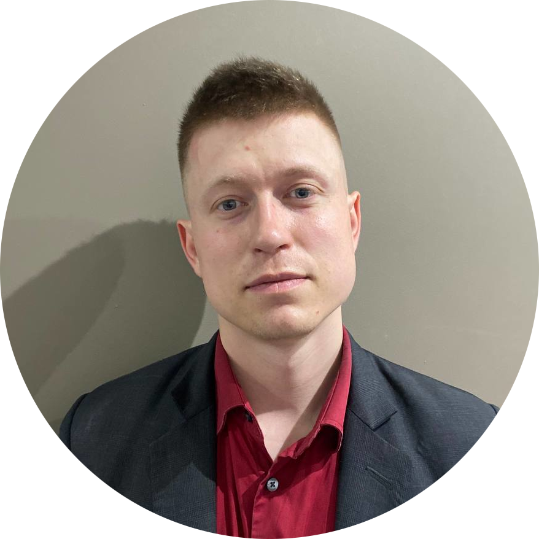

Латкин Константин Павлович
e-mail: latkin.k.p@ya.ru
 |
Старший преподаватель, кафедра Общая физика, Пермский национальный исследовательский политехнический университет |

| Младший научный сотрудник, Лаборатория фотоники, Институт механики сплошных средств Уральского отделения Российской академии наук |

| Учитель физики, Инженерная школа им. М. Ю. Цирульникова |
Konstantin Pavlovich Latkin
e-mail: latkin.k.p@ya.ru
|
Lecturer, Department of General Physics, Perm National Research Polytechnic University |
|
Researcher, Photonics laboratory, Institute of Continuous Media Mechanics of the Ural Branch of Russian Academy of Science |
ORHID: 0009-0000-7526-9088
Web of Science: C-2159-2018
Scopus: 57188338400
eLibrary: 7973-2250
Ключевые слова / Keywords
Волоконная оптика, активные волоконные световоды, спектроскопия, автоматизация и системы управления, виртуальная реальность, дополненная реальность
Fiber optics, active optical fibers, spectroscopy, automation and controlling systems, virtual reality, augmented reality
Публикации / Articles
- Konstantinov, Y. A. A Non-Destructive Study of Optical, Geometric and Luminescent Parameters of Active Optical Fibers Preforms / Y. A. Konstantinov, A. T. Turov, K. P. Latkin, Claude D., I. S. Azanova // Optics. - 2024. - №5 (1). - С. 176-194. - DOI 10.3390/opt5010013. (Web of Science, Scopus)
- Носков, М. Е. Очки дополненной реальности для визуализации данных компьютеризированной техники / М. Е. Носков, К. П. Латкин // Автоматизированные системы управления и Информационные технологии : Материалы всероссийской научно-технической конференции, Пермь, 07-09 июня 2023 года. - Пермь: Пермский национальный исследовательский политехнический университет, 2023. - С. 328-332.
- Latkin, K. P. The Simulation of Active Ions Luminescence in the Preform Core under the Pumping Through the Lateral Surface / K. P. Latkin // Optics Communications. - 2023. - №542. - C. 129564. - DOI 10.1016/j.optcom.2023.129564. (Web of Science, Scopus)
- Латкин, К. П. Система управления процессом контроля концентрации активной примеси в преформах волоконных световодов / К. П. Латкин, В. П. Первадчук, Ю. А. Константинов // Вестник Пермского национального исследовательского политехнического университета. Электротехника, информационные технологии, системы управления. - 2022. - №42. - С. 111-131. - DOI 10.15593/2224-9397/2022.2.06. (ВАК)
- Burdin, V. V. Multistage Quality Control Of Active Fiber Light Guides / V. V. Burdin, Y. A. Konstantinov, Claude D., K. P. Latkin, M. E. Belokrylov, A. I. Krivosheev, M. K. Tsibinogina // Instruments and Experimental Techniques. - 2021. - №5 (64). - С. 768-775. - DOI 10.1134/S0020441221050031. (Web of Science, Scopus, ВАК)
- Белокрылов, М. Е. Рефлектометрический метод измерения длины активных волоконных световодов / М. Е. Белокрылов, Ю. А. Константинов, К. П. Латкин, Клод Д., Д. А. Селезнев, А. А. Стёпин, Ю. А. Конин, В. А. Щербакова, Р. Р. Кашина // Оптическая рефлектометрия, метрология и сенсорика - 2020 : Сборник тезисов докладов, Пермь, 23-24 сентября 2020 года. - Пермь: Пермский федеральный исследовательский центр Уральского отделения Российской академии наук, 2020. - С. 29-30.
- Belokrylov, M. E. An All-Fiber Time Domain Reflectometer For Measuring The Length Of Active Erbium Doped Optical Fibers / M. E. Belokrylov, Y. A. Konstantinov, K. P. Latkin, Claude D., V. A. Shcherbakova, D. A. Seleznev, A. A. Stepin, Y. A. Konin, R. R. Kashina // Instruments and Experimental Techniques. - 2020. - №4 (63). - С. 481-486. - DOI 10.1134/S0020441220050012. (Web of Science, Scopus, ВАК)
- Латкин, К. П. Аналитическая оценка мощности люминесценции ионов эрбия в преформе активного волоконного световода / К. П. Латкин, А. С. Смирнов, В. В. Бурдин // Вестник Пермского федерального исследовательского центра. - 2020. - №4. - С. 41-46. - DOI 10.7242/2658-705X/2020.4.3.
- Белокрылов, М. Е. Комплексный охват проблематики создания оптоэлектронных устройств на примере элементной базы волоконно-оптических датчиков / М. Е. Белокрылов, А. И. Кривошеев, К. П. Латкин, Ф. Л. Барков, В. В. Бурдин, Ю. А. Константинов, Р. С. Пономарев // Вестник Пермского федерального исследовательского центра. - 2020. - №4. - С. 55-61. - DOI 10.7242/2658-705X/2020.4.5.
- Латкин, К. П. Оценка мощности люминесценции сердцевины заготовки волоконных световодов для измерения концентрации активных ионов / К. П. Латкин, В. В. Бурдин, Ю. А. Константинов, В. П. Первадчук // Фотон-экспресс. - 2019. - №6 (158). - С. 170-171. - DOI 10.24411/2308-6920-2019-16085.
- Латкин, К. П. Метод измерения абсолютной концентрации ионов эрбия в преформе активного волокна / К. П. Латкин, А. С. Смирнов, Ю. А. Константинов, В. В. Бурдин // Вестник Пермского научного центра УрО РАН. - 2018. - №4. - С. 21-26. - DOI 10.7242/1998-2097/2018.4.3.
- Konstantinov, Yu. A. Special Optical Fiber Preform Layers 3D-Reconstruction / Yu. A. Konstantinov, K. P. Latkin, F. L. Barkov, A. S. Smirnov, M. M. Poskrebyshev, V. P. Pervadchuk, D. B. Vladimirova, Yu. A. Konin, A. I. Garanin, V. V. Burdin // Scientific Visualization. - 2017. - №4 (9). - С. 47-58. - DOI 10.26583/sv.9.4.05. (Scopus, ВАК)
- Зырянов, С. В. Метод быстрого исследования компонент рассеяния Мандельштама-Бриллюэна, основанный на применении системы селективных отражателей / С. В. Зырянов, М. В. Ременникова, А. С. Смирнов, К. П. Латкин, Ф. Л. Барков, В. В. Бурдин, И. А. Лобач, Ю. А. Константинов // Фотон-экспресс. - 2017. - № 6(142). - С. 199-200.
- Ременникова, М. В. Исследование оптических свойств гольмиевых волоконных световодов в меняющихся температурных условиях / М. В. Ременникова, Ю. А. Константинов, А. С. Смирнов, Ф. Л. Барков, К. П. Латкин // Фотон-экспресс. - 2017. - № 6(142). - С. 268-269.
- Konstantinov, Yu. A. Special Optical Fiber Preform Layers 3D-Reconstruction / Yu. A. Konstantinov, K. P. Latkin, F. L. Barkov, A. S. Smirnov, M. M. Poskrebyshev, V. P. Pervadchuk, D. B. Vladimirova, Yu. A. Konin, A. I. Garanin, V. V. Burdin // GraphiCon 2017 27th International Conference on Computer Graphics and Vision Conference Proceedings : Труды 27-й Международной конференции по компьютерной графике и машинному зрению, Пермь, 24–28 сентября 2017 года / Пермский государственный национальный исследовательский университет. – Пермь: Издательский центр Пермского государственного национального исследовательского университета, 2017. – P. 74-78.
- Latkin, K. P. The precision analisys of results obtained by the method of concentration homogenity control along the preform / K. P. Latkin, A. S. Smirnov // Инновационные процессы в исследовательской и образовательной деятельности. - 2017. - №1. - С. 27-31.
- Smirnov, A. S. Rapid Method For Evaluating The Efficiency Of Excitation Energy Transfer Between Ytterbium And Erbium Ions In An Active Fiber Preform / A. S. Smirnov, K. P. Latkin, A. S. Kurkov, Y. E. Sadovnikova, E. G. Leksina // Optoelectronics, Instrumentation and Data Processing. - 2015. - №6 (51). - С. 582-586. - DOI 10.3103/S8756699015060096. (Web of Science, ВАК)
- Латкин, К. П. Измерение однородности концентрации активной легирующей присадки вдоль длины активной оптической заготовки / К. П. Латкин, А. С. Смирнов, В. В. Бурдин, А. С. Курков // Фотон-экспресс. - 2015. - №6 (126). - С. 157-158.
- Латкин, К. П. Оценка равномерности распределения ионов эрбия вдоль преформы активного оптического волокна по интенсивности люминесценции на разных длинах волн / К. П. Латкин, А. С. Смирнов, Ю. А. Константинов, В. В. Бурдин // Вестник Пермского научного центра УрО РАН. - 2015. - №3. - С. 4-11.
- Смирнов, А. С. Спектроскопический метод измерения однородности концентрации эрбия вдоль длины активной оптической заготовки / А. С. Смирнов, К. П. Латкин, В. В. Бурдин // Научные исследования и инновации. - 2014. - № 2. - С. 62.
- Беспрозванных, В. Г. Оптико-механическая модель измерения характеристик волоконного световода / В. Г. Беспрозванных, В. Р. Каюмов, К. П. Латкин, И. С. Стволов // Сборник научных трудов SWorld. – 2014. – Т. 27, № 3. – С. 3-7.
- Smirnov, A. S. Method for estimating the efficiency rate of an exciting energy transfer between Ytterbium and Erbium ions in a preform / A. S. Smirnov, K. P. Latkin, A. S. Kurkov // Инновационные процессы в исследовательской и образовательной деятельности. - 2014. - №1. - С. 151-152.
- Латкин, К. П. Метод измерения однородности концентрации активной легирующей присадки вдоль длины активной оптической заготовки / К. П. Латкин, А. С. Смирнов // Прикладная математика, механика и процессы управления. - 2014. - №1. - С. 106-108.
- Смирнов, А. С. Спектроскопический метод измерения однородности концентрации эрбия вдоль длины активной оптической заготовки / А. С. Смирнов, К. П. Латкин, В. В. Бурдин // Прикладная фотоника. - 2014. - №2. - С. 62-70. - DOI 10.15593/2411-4367/2014.2.04.
Патенты / Patents
- Патент № 2798083 C1 Российская Федерация, МПК G01C 21/08. Система управления объектом : № 2022108532 : заявл. 31.03.2022 : опубл. 15.06.2023 / Н. А. Кычкин, С. Г. Каримов, К. П. Латкин, Н. В. Аксенов, Д. О. Сирин.
Программы / Programs
- Свидетельство о государственной регистрации программы для ЭВМ №2022666232 Российская Федерация. ErGO System : № 2022663356 : заявл. 07.07.2022 : опубл. 26.08.2022 / К. П. Латкин, Ф. Л. Барков, D. Claude.
- Свидетельство о государственной регистрации программы для ЭВМ №2022660503 Российская Федерация. erbiumCalc : № 2022660112 : заявл. 06.06.2022 : опубл. 17.06.2022 / К. П. Латкин.